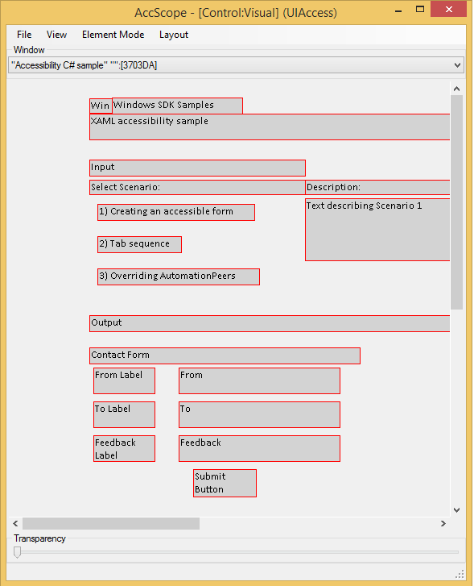

title: Accessibility tools - AccScope
description: The AccScope tool enables developers and testers to evaluate the accessibility of their app during the app's development and design, rather than in the late testing phases of an app's development cycle.
ms.assetid: 7C4D78CD-CDDA-8369-B747-6224C152A997
ms.topic: article
ms.date: 05/31/2018
Accessibility tools - AccScope
The AccScope tool enables developers and testers to evaluate the accessibility of their app during the app's development and design, rather than in the late testing phases of an app's development cycle. Testing can even start in early prototype phases. AccScope can visualize how a screen reader exposes the UI Automation information that an app provides, and can show areas where you might want to add info or support to your app to improve its accessibility.
[!NOTE]
AccScope is a legacy tool. We recommend using Accessibility Insights instead.
About AccScope
AccScope is installed with the Windows Software Development Kit (SDK). It is located in the \bin\\AccScope folder of the SDK installation path. Run the program AccScope.exe.
AccScope is a desktop app, not a Windows Store app. You can use it to look at any app that appears as a window, including a desktop app, or a Windows Store app.
You might need to run AccScope as administrator the first time you use it, to enable the Narrator mode.
AccScope is available as part of the accessibility tools binaries, in the Windows SDK. It is not distributed as a separate exe download and does not exist in previous SDKs.
File menu options
- Select Refresh to refresh all info in AccScope to match the current state of the target window. For a UI that contains a large number of elements this can take several seconds to complete.
- Check or uncheck Always on Top to change the windowing behavior of the AccScope UI. Always on Top checked is the default.
- Select Exit to quit AccScope.
View options
-
Select Full Screen to run the AccScope tool in a full screen view (then use tabbing to view the target window). If both AccScope and the target app are running full screen, placement, bounding rectangles and overall visualization of elements will correspond between your app and the AccScope view.
[!Note]
AccScope and its target should be run on the same display.
Â
-
Select Auto Focus to enable AccScope to change the target window whenever a user moves focus to the window (using mouse or keyboard).
-
Select Auto Refresh to enable the AccScope mode that refreshes all accessibility data of the target window every 5 seconds. This is useful if the Microsoft UI Automation data of target window changes constantly.
-
Select Live Regions to highlight any live regions that issue notifications in the target window. A live region event firing display a red popup that has info about the live region including its name and its "aria-live" value (or the equivalent ARIA value analog for apps not directly using HTML but using the Live Regions concept in the UI Automation support).
Element Mode
You can choose to view a target window through one of these modes:
- Leaf Control: Shows a UI Automation view of Control elements with parent-child relationships, in other words a view of "leaf level" interactive controls. Use this option to see if all interactive controls are appearing correctly in the UI Automation tree for a Control view.
- Text Pattern: Shows visible text ranges of the TextPattern containers from the target window. Use this option to visually represent the visible text ranges of UI Automation TextPattern elements.
- Narrator: Shows the UI Automation elements that Narrator can identify using the Narrator 'item navigation’ metaphor.
- Custom Filter: Shows a filtered control tree with a choice of control subsets: Button, Checkbox, Combobox, Grid, Hyperlink, List, Menu or Table.
Changing the Element Mode setting triggers a refresh of the visualization. For a UI that contains a large number of elements this can take several seconds to complete.
Layout options
You can select either Visual or List as the visualization mode for the AccScope layout. Visual places the elements in coordinate space in the same relationship as the target window. List orders the elements in a descending list that's left-aligned in the AccScope window and the list order is equivalent to tab order or reading order.
- Select an option from Show Images to control when the simple rectangles for image elements are replaced by the actual image (or a small viewport of that image, since often the rectangles are smaller than the actual image). The default is On Hover, which displays the image when you navigate within AccScope and hover the mouse over the rectangle for an image element. Alternate choices are Always or Never.
- Select Show Tooltip to show basic element info whenever you hover the mouse over an element in the AccScope visualization. If the Element Mode is Leaf Control or Text Pattern the info shown in the tooltip is the highest-priority element-level UI Automation properties. If the Element Mode is Narrator the info includes the text that Narrator would read for the element.
- Select Show Numbers to display sequence numbers that indicate control render order in layout. The number scheme is based on the Element Mode setting:
- Leaf Control: the numbers indicates the order in which leaf controls appear in the UI Automation tree.
- Text Pattern: the numbers indicate the order in which text ranges appear in a document range.
- Narrator: the number indicates the order in which the elements are navigated in Narrator's item navigation.
Choosing a window
Under the label Window you'll find a dropdown that lists all the HWND windows that are currently active on the system. The text for each window that appears in the dropdown list is the window title, and also a hex window ID in square brackets. Choose one of these to change the target window that AccScope is reporting on. You can choose the same item again to get the same behavior as an explicit Refresh.
Using the AccScope visualization
The image below is a screenshot of the AccScope visualization. This particular screenshot shows the AccScope tool viewing the top-level window for the XAML accessibility sample output, running as an app on the same machine. This screenshot shows the default element mode of Leaf Control and the Visual value for Layout.

Note how this visualization represents the controls in the approximate coordinate space you'd see in the app. But instead of showing you the XAML visuals, or the complete text of text controls, it shows the Name property values that come from every control element, using UI Automation.
In addition to the menu options described previously you also can use these techniques:
- Click on any element's rectangle in either Visual or List visualizations to display a UIA Properties popup. This lists a number of the important UI Automation properties for that element including some of the standard IUIAutomationElement properties and other info such as ARIA values and a Provider description.
- Right-click on any element's rectangle in either Visual or List visualizations to display a context menu for exercising the patterns that the element supports. For example, if an element supports InvokePattern, the context menu includes an item for Invoke. Select that item and the appropriate pattern API is exercised in the corresponding app. AccScope supports this feature for the following patterns: Invoke, ExpandCollapse, Toggle, SelectionItem, ScrollItem.
- Adjust the Transparency slider to change the opacity/transparency of the AccScope window. By default it's shown as 100% opacity. Making the window partly transparent can be useful for seeing the parts of the target window through the AccScope UI while using the Always On Top mode.
- If they're shown, use the horizontal and vertical scrollbars to change the view center of the visualization. This is useful if you're using the Visual layout option but not using the Full Screen view option, while leaving the AccScope window small in comparison to the target window.
Testing the Narrator scenario
The Narrator scenario is the most important aspect to test when using AccScope, which is specifically designed to visualize how basic Narrator item navigation works when it's applied to your app.
To test the Narrator scenario, use these AccScope configuration options:
- Element Mode: Narrator
- Layout: Visual
- Layout options: Show Tooltip and Show Numbers both selected
Here are some specific areas of your app to test for the Narrator scenario:
- Element order: Verify that the order in which Narrator reads your controls is accurate, according to the numbers (green circles) displayed in the visualizations. If elements aren't in the order you expect for reading, modify the app's UI structure and the resulting UI Automation tree, and test again until you've verified that your elements are in expected reading order.
- Spoken text: Move the mouse within the visualization and hover over each of the element rectangles to display the tool tips for each element. In Narrator mode the tool tips display a Narrator Text entry that is literally the text that Narrator reads. Generally this text is composed from the Name and the Control Type. Verify that this is the right info for each control in your UI. If any info is incorrect, modify the UI Automation properties through the techniques enabled by your particular UI framework for doing so. (If Control Type is unexpected, you might need to use a different control, because that's often exclusively controlled by a UI framework's control implementations.) Then test again and verify that Narrator Text is correct.
- Element layout: Check each of these cases:
- Verify that redundant elements are not exposed by Narrator. An example of a redundant element is the ratings control in each Windows Store tile item.
- Verify that important elements (elements the user needs to accomplish key tasks in the app) each appear in Narrator item navigation.
- If you're using the Visual layout and an element is missing because controls overlap each other, switch to List layout to see the sequence that Narrator reports.
- Verify that the UI Automation tree structure overall is accurate and expected for your app.
Related topics